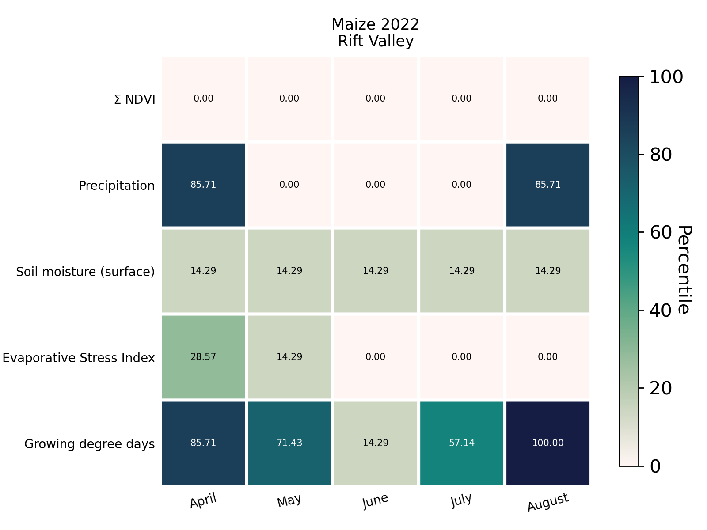
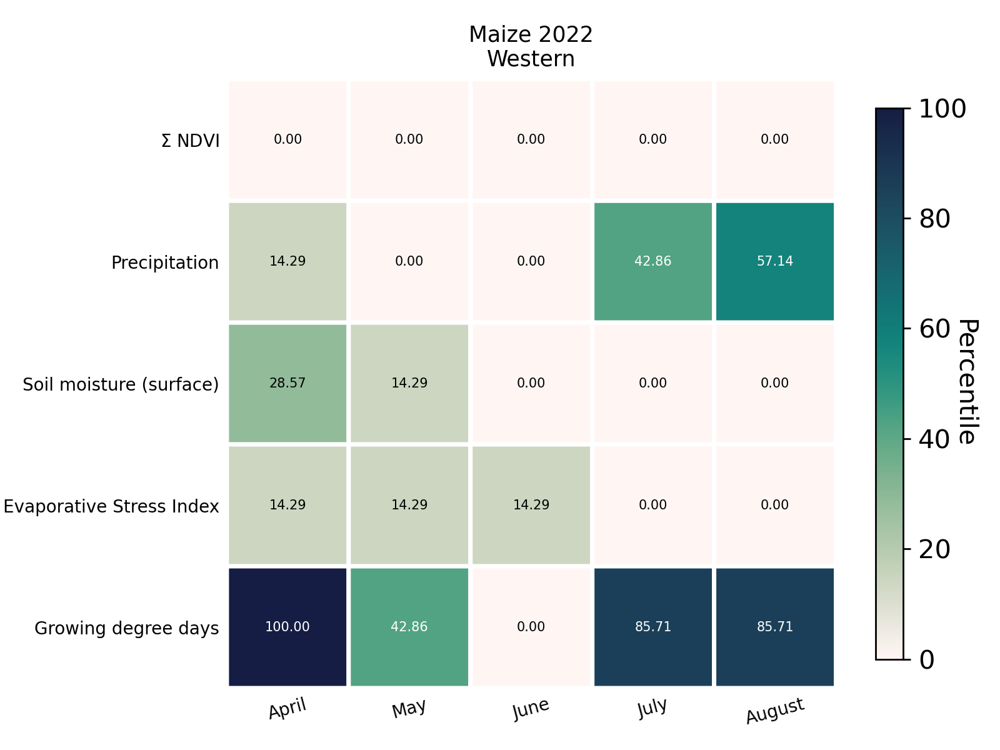
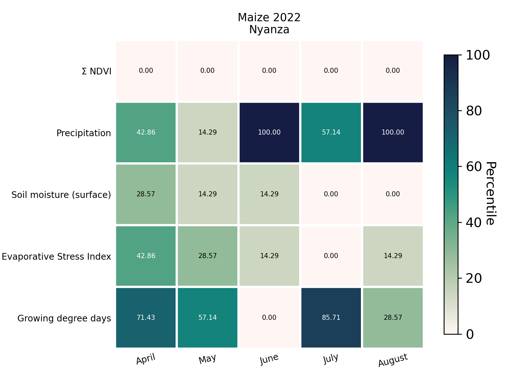
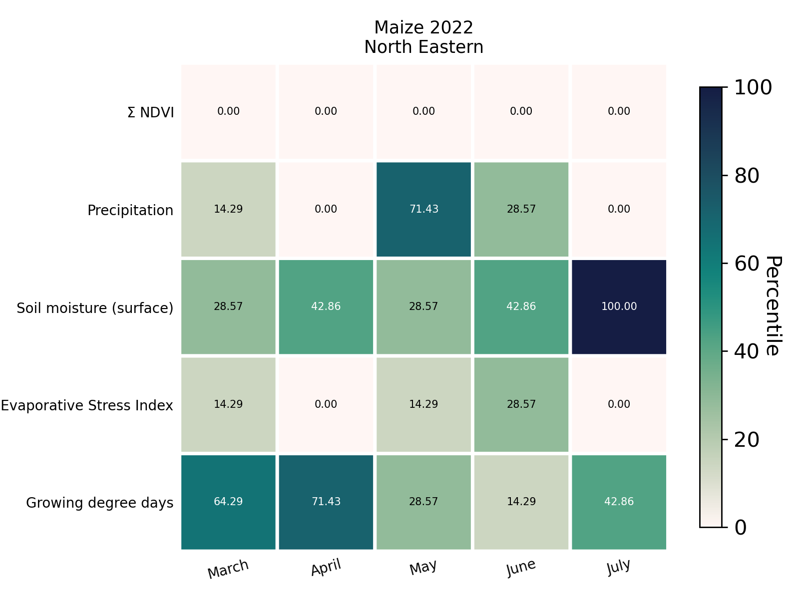
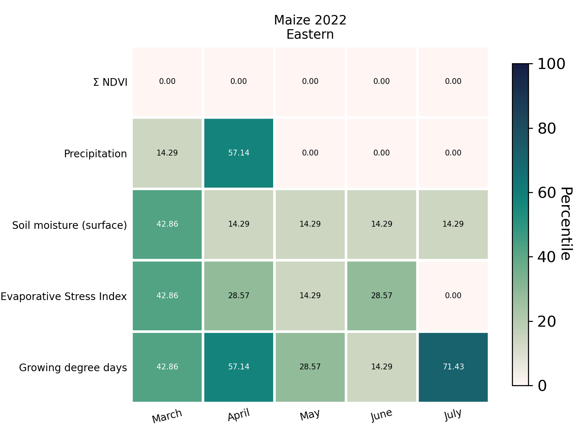
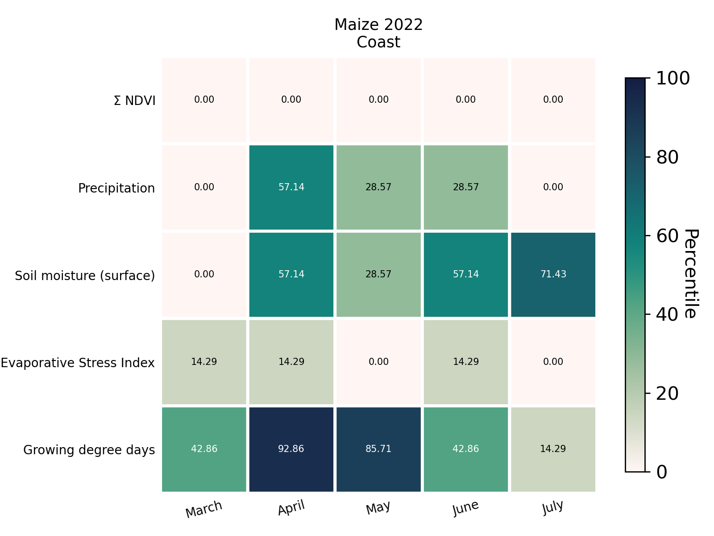
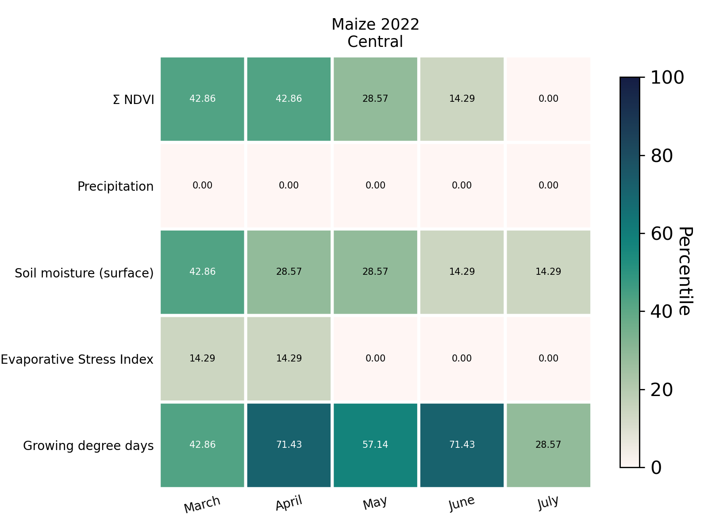

Crop Condition Analysis
Contents
Crop Condition Analysis#
The GEOGLAM-NASA Harvest Agrometeorological AgMet Earth Observation Indicators utilize a wealth of Earth observation data to provide valuable insights on in-season crop development and current crop conditions at the sub-national scale. Each AGMET Indicator consists of several EO data plots that quantify critical indicators of crop health for a specific region over the cropping season. The AGMET Indicators are being produced for all GEOGLAM Crop Monitor countries and are updated every 7-12 days to ensure that users are provided with the most up-to-date information.
Here we examine how to put together a basic crop condition analysis using the AgMet Indicators and related graphics.
Percentile analysis of crop condition#
These graphics show the progress of EO variable over the growing season. The progress is measured using percentile of the EO variable by comparing the present season value to those from the previous seasons. A percentile score of 51 in a particular month means that the EO variable value is more than 51% of the values of the same EO variable in the same month from the previous seasons. Higher percentile scores indicate a high value for the EO variable as compared to previous seasons and vice versa. In these graphics, we use the following variables:
Area under the NDVI curve
Precipitation
Surface soil moisture
Evaporative stress index
Growing degree days
As an example, in Rift Valley in 2022, the area under the NDVI curve was consistently at the 0th percentile indicating below average crop conditions. This can be corroborated from the AgMet graphic above as well. Similarly, these other rows in this graphic follow the trends evident in the AgMet graphic.
      
Key questions for crop condition analysis
- For each region try to answer the following questions:
How does the NDVI level in the current season compare to the 5 year average?
Is cumulative precipitation above or below the 5 year average?
Is daily precipitation well distributed throughout the growing season?
What is the percentile score of the surface soil moisture in the current season?
What is the percentile score of the evaporation stress index in the current season?
What is the percentile score of the growing degree days in the current season?
Based on the answers to the above questions, we can then determine the crop condition for each region.